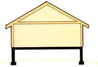
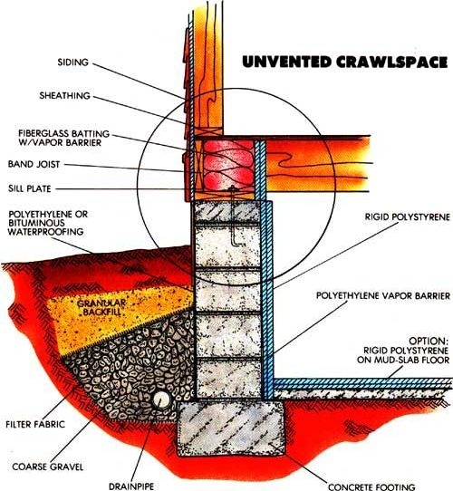
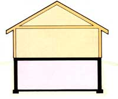
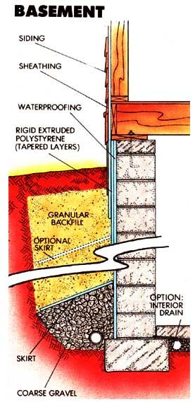
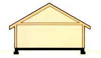
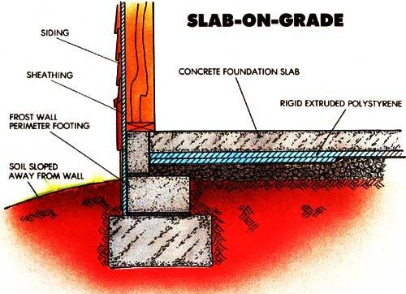

Leaky foundation got you on your toes?
Then it's probably wasting money too.
THOUGH IT'S ONLY A CALCULATED GUESS, one Department of Energy report estimates that, nationwide, residential households consume 12 quadrillion (a dozen followed by 15 zeros) Btu of energy in the course of a year. About one-tenth of that is lost through floors to the crawlspace or earth below. A second study indicates that if just the foundations of these houses were insulated properly (and nearly 95% are not), the conservation in energy could amount to one-half quadrillion Btu annually. Cost savings? Roughly $5 billion per year.
Viewed as a whole, the figures are staggering. But taken per house-your house-- they're a lot simpler to understand. To begin with, it's become clear that insulating below the living area is cost-effective-that is, any expenditures will pay for themselves in energy savings over a reasonable period of time. Though this is more apparent in new construction, a home that's been lived in for years has plenty of payback potential in it if the retrofitting is done sensibly.
What's more, the very act of upgrading insulation aboveground-where most homeowners start-throws a burden of accountability on the structure beneath their feet: An uninsulated foundation wastes only 10% of a leaky building's heat. That percentage can easily quadruple once the house is buttoned up tight.
Such economic concerns are only part of the story. A correctly insulated foundation can be the solution to existing-or impending - moisture (and maybe even structural) problems, a deterrent to termites and other wood-destroying insects and an impediment to radon infiltration of the living area.
Consider, too, that a well-sealed structure is logically a more comfortable one-and in the case of homes with basements, one in which a normally damp area can become a practical living space with only a moderate investment.
That's the bright side of the coin. In contrast, approaching below-floor weatherization hell-for-leather style, throwing money and fiberglass at the problem with the assumption that more is better, can-and has-created other concerns.
Because foundation improvement has traditionally dealt with structural aspects rather than thermal loss, it's no surprise that curbing heat flow in that area was handled the same way as stopping loss in any other part of the house. In the worst cases, this has altered conditions enough to produce significant condensation-with subsequent deterioration problems.
It's only been in the past few years that experts in a variety of fields have been able to establish some solid foundation guidelines for designers and builders. In some cases, the
new rules require a modification of existing construction techniques; in others, they may come into conflict with local code and will have to be judged on an individual basis. Fortunately, code officials and policymakers are aware that technology is changing and are working with researchers toward that end.
Last year, the Census Bureau made the landmark announcement that 100 million housing units had been built in the United States. It happens that about two-thirds of these are single-family homes, and all have one of three types of foundation: full or partial basement, crawlspace or slab-on-grade floors (see illustrations).
The design chosen is influenced by cost factors, climate, topography, soil type, the water table and plain old tradition. But it's safe to say that, for the most part, the majority of houses in the northern and plains states (roughly above the 37th parallel) tend to be built with basements, while those in the South are constructed on slabs. The exceptions, those homes built over crawlspaces, show heavily in Oregon and the Carolinas, and moderately in the rest of the Southeast and far West-regions with a typically lower heating, and a somewhat greater cooling, load.
Constructing any of the three kinds of foundations to correspond with the latest findings presents little problem. Adapting existing foundations, however, can become a complex process with basements and may be impracticable when a slab is involved. Crawlspaces are the least difficult to retrofit, and often benefit the most since they're prone to moisture and insect damage.
The insulation methods that follow are well-suited to foundations and resolve many problems characteristic of below-grade situations. All are general recommendations, since specifics depend so much upon individual siting. Naturally, real-world cost restrictions usually determine just how far an insulation project can go-but we can at least take comfort in the fact that no matter the amount, it's money well spent.
Most crawlspace problems disappear with proper maintenance.
Crawlspaces
The customary crawlspace is the generally 3'-high (mercifully more but often less) area beneath the floor that's established when a structure is supported on its footings by a perimeter wall. Homes built on piers are included; the only difference being that the crawlspace is exposed.
Anyone who's spent more than five minutes in a crawlspace knows how it came by its name and why it kindles unpleasant thoughts. But cramped quarters aside, the tendency of that area toward excessive moisture is more often caused by poor siting than an inherent flaw. Sloping grades or slow-draining sites seem to be an invitation for the easy fix of bridging the water hazard with a crawlspace rather than confronting it; hence the to-be-expected long-term results.
Jeff Christian, technical advisor and manager for the DOE-sponsored Oak Ridge National Laboratory foundations research project, summarizes current rationale when he states that "most crawlspace problems wouldn't exist if they got the same attention as basements: proper drainage, damp-proofing and insulation in the right places."
Right now, venting seems to be a bone of contention. Though field research suggests that a well-prepared crawlspace doesn't need foundation vents, building codes literally require them: A typical recommendation over a soil base calls for at least four vents with a total net area of 1/15o the floor area, located within 3' from corners and unobstructed by shrubbery or ductwork. Concerns over radon contamination also favor subfloor ventilation, even if it is only passive.
To compound the problem, vented spaces insulated to the limit have shown an alarming ability to collect moisture during the summer. The reason? Cool earth temperatures sustained by the super thermal barrier are often below the dew point of the humid summer air. Any incoming air is cooled beyond saturation, causing condensation.
Regrettably, untreated wood with a moisture content of much more than 20070 is prone to fungal attack and deterioration. To put that figure in perspective, a 2 X 10 in open air averages 12% to 15010 moisture; in a constantly damp environment, the same framing member may well contain over 50070.
There are solutions. The simplest is to close the vents in the warmer months, which may work well if moisture isn't a concern throughout the rest of the year. If it is, consider these additional measures:
Vapor retarder:
In regions with more than 20" annual precipitation (this excludes the desert states, parts of Colorado and a wide swath from eastern Washington to the Dakotas), a 6- or 10-mil polyethylene vapor barrier can be laid over the floor of the crawlspace once it's leveled and cleared of wood scraps, rubble and other sharp debris. Each section should overlap 6" at the seams, and the membrane should be carried to the top of the foundation wall and secured with industrial sealing tape.
Surface drainage: Rainwater mustn't be allowed to collect within 10' of the foundation. The surrounding earth should have low permeability (clay is ideal) and be sloped away from the structure so there's a 6" drop in the 10' distance. There shouldn't be a sidewalk or driveway impeding run-off: If the roof has less than a 3' overhang, consider adding gutters with downspout extensions.
Subsurface drainage: Chronic moisture may indicate a high water table or poorly drained soil. Simply keeping the crawlspace floor above the exterior grade level will help; if this isn't practical, a perimeter drain or, at sloped sites, a curtain drain buried on the upper side-may be needed to carry water from nonporous soil to a lower exit point or a sump pump. A good drain consists of 4" perforated ABS pipe or drain tile set in a bed of coarse gravel within 8" or 12" of the exterior foundation footing. A silt filter covers the stone, and sand or small gravel can be used as backfill to about 6" of finished grade. Once the excavation is done, it's convenient to apply a standard-duty waterproofing material just in case. Polyethylene, PVC sheeting and bituminous coatings are all well suited to the job.
With the foundation protected from water entry, there are a number of insulation choices. A common practice in vented spaces is to wire-support fiberglass batts-paper toward the warm side-between the floor joists. Thicknesses of 3 1/2" or 6" (or a combination) can be used to meet code. Drawbacks include the difficulty of working around wires, pipes and braces, the necessity of seasonal vent control-with occasional checks for condensation-and the added expense of insulating pipes and ductwork separately.
Unvented spaces allow more leeway. It's typical to insulate the perimeter wall, rather than the crawlspace ceiling, and is more economical besides. Duct and pipe insulation becomes unnecessary. Without getting into a scientific analysis, it's safe to say that, though placing the insulation outside the wall offers more protection to the structure, putting it inside is easier and less costly. The rate of heat loss is about the same in both situations.
For inside work, rigid polystyrene (molded or expanded) is less expensive and therefore preferable to the more costly extruded styrene board, which is dense and highly water resistant for exterior use. Polystyrene may not need an additional vapor barrier, and it can be caulked in place or fastened with stick clips or an adhesive sealant. Fiberglass batting can be used in the cavity above the sill plate, against the band joist, but should be covered with polyethylene or fitted sections of rigid insulation board.
Another approach would be to hang flexible insulation, such as 2" foil-backed duct wrap or fiberglass batting, over the vapor sealed face of the wall on concrete nails, then carry it 1' or 2' inward so it rests flat on the crawlspace floor. The batting's foil facing should be toward the warm surface and may need to conform to fire code.
It's ideal, though not always practical, to have some type of horizontal insulation at least along the inside perimeter of the wall. Unless the soil is dry and graded level, a rough concrete "mud slab" makes a good base for any insulation material. If rigid board is used, the vapor barrier can go above or below it; otherwise, the poly sheeting should lie directly on the ground.
Insulating outside the wall is best if cost isn't a major concern.
Any attention to insulation detailing brings up the question of termite control. Merely keeping construction scraps and moisture away from the area is a help, but not a solution. Sound construction practices include the use of a solid bond beam or cap at the top of concrete block, termite shields at the sills, and patios or porches that slope away from the foundations. Sills and wood trim should be visible and at least 6" or 8" above grade on the outside, and, if possible, interior insulation should be fastened in such a way that it can be partially removed for seasonal inspection.
It stands to reason that if you're willing to bear the additional cost of a basement, it should be a dry and comfortable place. Sadly, far too many are just dank holes in the ground.
A basement, for the purpose of discussion, is merely a tall, unvented crawlspace, its floor surface perhaps 7', rather than 2', below grade. In this light, the drainage procedures are the same as those detailed earlier, though during new construction, a second subdrain may be added along the inside of the footing to carry water from under the basement's concrete floor.
Shrinkage or stress cracks that appear in the wall after it's built, and that ooze water on a regular basis, may require more than standard waterproofing techniques. Epoxy or urethane foam injections are often used professionally in poured concrete walls, but probably the most common fix for stressed block walls is an interior drain system.
Usually, water enters from the outside and flows through the block cores to run out the floor joint. The repair involves boring into the cores at the base of the wall-either at floor level or beneath the slab, once a trench is dug-and installing individual relief tubes that connect to a larger drainpipe. The pipe is covered if it's set in the floor, and is routed to drain into a nearby sump pump.
If outside excavation work is inevitable, additional waterproofing measures are highly recommended. Rather than rely on coal pitch or poly films, it may pay to invest in butyl or EPDM elastomer sheets, or rolls of modified bitumen, in combination with a foundation drainage mat specifically made for permanent belowground use. Several companies make plastic mats that keep water pressure from building up at the wall, and there are a couple that combine a drainage layer and insulation in the same product.
The most practical exterior insulation, by the way, is probably extruded polystyrene board, for the reasons mentioned earlier. There are two ways to make it work, both handled from outside the wall, which minimizes condensation problems. The most effective is to cover the foundation from the top of the band joist down to the top of the footing. Since heat loss to the soil is greatest at the upper part of the wall, it's best to stack the insulation at the top and taper it to a single thickness near the bottom, figuring on a reduction of about R-2 for every foot of depth. A 7'-deep wall averaging R-16, for example, would have 4" of board at ground level and 1 " at the footing. Performance can be further improved by filling the cores of foundation block with loose vermiculite or perlite, and flaring a 2' insulation skirt over the footing and subdrain.
As an alternative (for unvented crawlspaces, too), you can insulate to a point about 2' below grade, then extend 2' of rigid board outward from the face of the foundation. This tends to reduce heat loss from the lower section of wall and is well suited to an existing home because it's easier to accomplish.
In each case, the insulation above grade should be fitted beneath the wall siding, and protected below the sill plate with flashing, sheathing or a fiberglass-reinforced cement coating.
Insulation after the fact is a limited option when dealing with slabs.
Slabs
The very nature of a slab-on-grade doesn't allow a whole lot of flexibility where retrofitting is concerned. On one hand, the pad is right at the surface, so moisture problems are seldom extreme. On the other, any work within the perimeter of the slab footing is out of the question.
If recurring dampness is a problem, especially after rain, the appropriate surface drainage steps can be taken with an eye toward shedding water from the vicinity of the house. Should run-off collect between a walk and the foundation, a drain trench or ground sloping might be in order.
Insulation after the fact is a limited option, as well. For new construction, it's now understood that full-width, uniform protection under the slab can't be justified economically or in heat savings. Instead, it's best to insulate most heavily beneath the perimeter, gradually decreasing the thickness of the material toward the center of the slab, which may not need to be insulated at all.
The second-best choice, then, is to place up to 4" of extruded polystyrene against the outside of the perimeter footing, to the same depth as the concrete. Ideally, the insulation should extend as far downward vertically as it would have horizontally, but this probably wouldn't be possible even in northern climates, where the frost walls can be fairly deep. Settle for what you can get, and be sure to cover any exposed insulation board with flashing or structural coating.
Done carefully, protecting your foundation from moisture and heat loss is like putting money in the bank. It takes it out of your pocket in a hurry, but you'll always get more back in the long run.
Editor's Note: What may be the most thorough book on the subject of residential foundation planning, Building Foundation Design Handbook, has just been released and is currently available at a cost of $30 plus $3 shipping and handling, payable to the Underground Space Center, University of Minnesota, 500 Pillsbury Dr. S.E., Minneapolis, MN 55455.
|
|
 |
 |
|
 |
 |
 |
|
 |
|
|